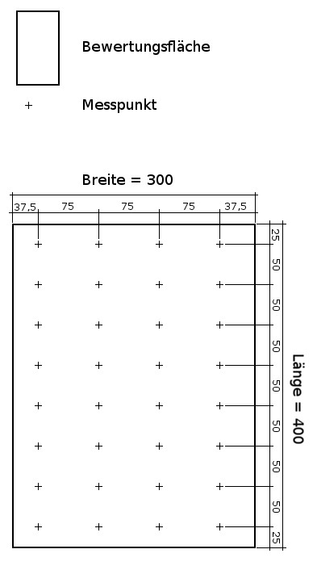

Die Rasterberechnung wird auf Grundlage der RIL 813 05 der DB ausgeführt
Es muss nicht der komplette Beleuchtungsbereich gemessen werden. Es kann sich auf "representative Bereiche" beschränkt werden.
Gegeben ist eine Bewertungsfläche von einer Breite = 3m und einer Länge = 4m
Die Berechnung ergibt 4 Rasterpunkte und eine Rasterlänge von 0,75m für die Breite der Bewertungsfläche sowie 8 Rasterpunkte und eine Rasterlänge von 0,5m für die Länge der Bewertungsfläche.
Die Rasterpunkte werden wie in der Zeichnung dargestellt über die Bewertungsfläche verteilt.
